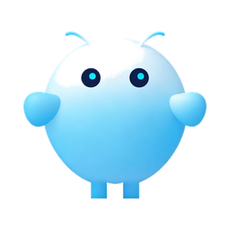

ClawBuddy
你的本地 AI 伙伴
微信 / 飞书一处对话 · 数据留在自己电脑
⬇ 下载 Windows 版
Windows 10 / 11 (64 位) · 安装包约 58 MB
安装说明
- 点击上方按钮下载安装包（
ClawBuddy_x64-setup.exe）。
- 双击运行；若系统提示「Windows 已保护你的电脑」，点「更多信息 → 仍要运行」。
- 安装完成后从开始菜单打开 ClawBuddy，首次启动需等待十几秒预热模型。
- 在设置里填入 StepFun API Key 即可开始对话。